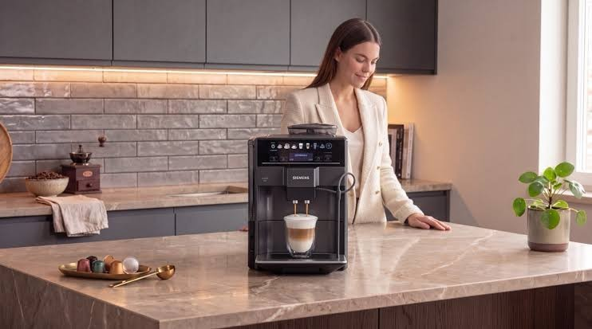

Featured Works
4 of 110 pieces, in full
SiemensProduct Page
Everything's easier and more efficient with a connected kitchen.
ViduCase Study
A case study on Vidu AI video generator to boost awareness.
ViewQwestBlog
WiFi 6 Explained: Speed, Benefits, and Why It's Time to Upgrade
XiaomiPress Release
Xiaomi SU7 Ultra Unveiled: The Ultimate Performance Technology Sedan
Full Archive
110 pieces
Filter
- Journalism
- What happens when vaccine scepticism takes over? Look to the Philippines
- Ocean's 2018: Is Europe's Cybersecurity Keeping up with the Rise of Financial Cybercrime?
- Philippines tries to reignite production
- Meet the 5th generation of Aboitiz leaders
- The Price of Beauty
- Pamora Farm: Land of the Free
- The House the 'M' Built
- A Tale of Two Chickens
- The Cafe Scene
- How this family-run concept transitioned from a bazaar stall to a full-scale restaurant
- With Agimat, Niño Laus masters the art of foraging
- Capital Cities: Unabashedly Cheery
- A coffee journey: From the farm to your cup
- Dr Michio Kaku: Philippines poised to leap into the future
- Bar topnotcher chooses Myanmar for practice
- Dr Onofre Pagsanghan: Those who can, teach
- C.B. Cebulski: Dreamcatcher
- To Market, To Market
- Rest for the Weary: The Dangers of the Graveyard Shift
- Blogs & Thought Leadership
- Reasons Why Having A Fast Broadband Connection Is Essential
- Home Cybersecurity: How To Protect Your Family From Cyber Threats
- WiFi 6 Explained: Speed, Benefits, and Why It's Time to Upgrade
- Need A Change? Here's Your Guide To Choosing A New Broadband Plan
- How To Create The Optimal Gaming Room Setup
- Here's How To Understand Your Internet Speed Test Reading
- SecureNet Cyber Threat Report | October 2021
- How To Build A Smart Home The Smart Way
- Take Your Hybrid Work-From-Home To The Next Level For Peak Productivity
- Insights on Social Media Strategy
- Welcome to Our New Look: Eleven International — Your Trusted Advisor for Cross-Border Communications
- Truly Eleven 'International'; The diversity that shapes us
- How the 'Attention Economy' of Web 2.0 failed us, and the promise Web 3.0 holds
- The Age of Outrage: How Reaction Culture is Damaging Discourse
- Tech Companies Can't Ignore Online Harassment of Women Any Longer
- The secret to being more creative, is to not be original
- Understanding the Role of Imagined Communities in Online Spaces
- Reclaiming Focus: The Necessity of Deep Reading
- Can technology reclaim our diminishing reading time?
- What's next after social media's failure to its users?
- What's next in media after the clickbait era?
- Family finance: Raising stock market kids
- A mom speaks: Family, priorities, and money
- The new wave of volunteerism
- How to Choose the Right Internet Plan for Your Business
- Protect Your Business Against The Most Dangerous Cybersecurity Threats
- 3 Steps on How to Successfully Launch a Home-Based Product
- 6 Low-Cost Startup Business Ideas for Fresh Grads
- How Free Customer WiFi Can Help Boost Your Business
- Identifying Food Trends That are Here to Stay
- FOMO? YOLO? Here's How to Showcase Your Products to the Instagram Generation
- Press Releases
- Xiaomi SU7 Ultra Unveiled: The Ultimate Performance Technology Sedan
- Xiaomi Unveils Next-Gen AIoT Lineup Spanning Smart Home, Wearables, and Entertainment
- Xiaomi Unveils Xiaomi 15T Series Blending Outstanding Optics with Cutting-edge Technology and Flagship Design
- LOST MARY unveils strategic business plans as it enters Malaysia, pledging regulatory compliance
- Video-to-Music Composition Tool 'TemPolor' Launches to Challenge Sora AI and Suno
- Little Caesars Pizza to Celebrate Its First Philippine Location
- Case Studies
- UniPass: A self-custodial Web3 wallet app developed by Account Labs
- BetterAlt: A Mumbai-based wellness company combining traditional Ayurvedic wisdom with modern science
- LightSpeed Studios: One of the world's leading global game developers
- Vidu: Leading generative AI video platform known for its pioneering Multi-Entity Consistency feature
- Brilliant Labs: Wearable tech company redefining how humans interact with technology through AI-powered glasses
- Red Door Digital: Gaming studio creating AAA-quality Web3 video games
- Product Copy & Articles
- Cut Through the Wellness Clutter With This Ancient Remedy for Ultimate Health
- The Future of Anti-aging Means Going Back to an Ancient Remedy
- A Smarter Way to Clean: Why a Robot Vacuum Is a Must-Have Addition to Modern Homes
- Why the Right Baby Carrier Can Make Postpartum Life Easier
- How Public Babywearing Challenges Old Notions of Manhood
- Scripts
- How Biomedis Helps Patients with Critical and Acute Diseases
- Transform Your Business's Security with BeyondSight
- Landing Pages & UX Copy
- ViewQwest Residential Broadband
- Infographics & Reports
- From telco to techco: Enabling the future of digital transformation
- From Onboarding to Team Engagement: Streamline Hybrid HR Processes With Ease
- Tech-driven inclusivity: strategies to upskill a diverse workforce
- Next-gen security for the remote workplace
- Email Marketing
- Welcome to the Best Place to Buy Your Summer Stock
- Sizzling Summer Steals: Buy Australian Wholesale
- November TradeSquare Update
- Koala is Now on TradeSquare: Launch Campaign
- Discover Australian Wholesale: Platform Guide
- 'Tis the Season: TradeSquare Advent Calendar
- Product Guides
- Connected Kitchen
- Get to Know Your Oven
- Get to Know Your Hob & Hood
- Get to Know Your Fridge & Freezer
- Coffee Expertise
- Discover Meat Free Meals
- How to Prepare Brunch
- How to Prepare Fish
- How to Prepare Healthy Dishes
- Making Healthy Food Choices
- How to Store Food Properly
- How to Reduce Food Waste at Home
- How to Shop Sustainably
- Tips for Hosting a Dinner Party
No pieces match this filter.